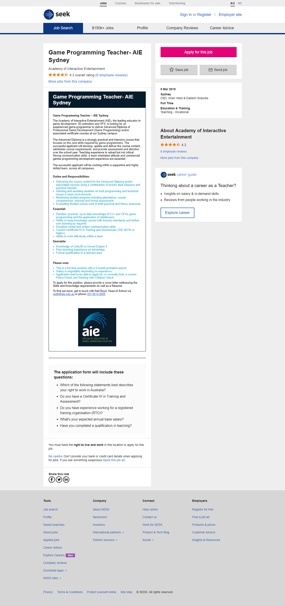
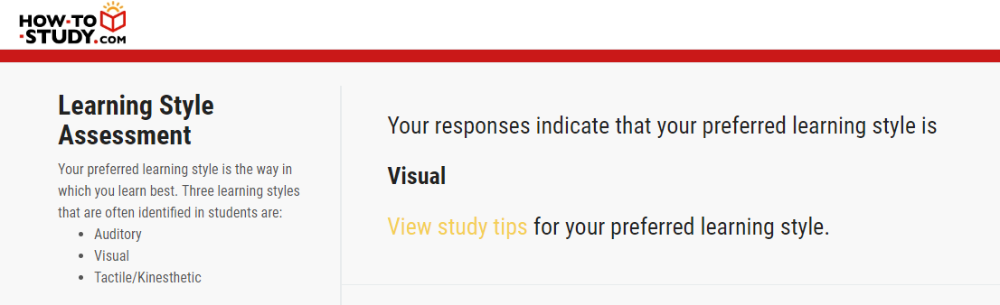

Personal Information
Name: YanNi Zhao (it is pronounced 'yenny')
Student number: s3782495
Email address: s3782495@student.rmit.edu.au
Current study: Bachelor of Information Technology
More about me: I am both in China, Guangzhou, but I have lived in Australia since I was 3 months old, therefore pretty much Australian. Since my parents are both Chinese, I speak Mandarin, Shanghainese (a Chinese dialect from Shanghai) and of course English. I also speak basic Japanese from study. In my spare time, I enjoy making cosplay outfits, drawing traditionally (pencil on paper) and I can do complicated origami.
Cat or dog: Cats (but dogs are still adorable in their own way)
TopInterest in Information Technology
I was first exposed to IT in highschool for a subject called Games Programming. It was very fascinating to learn structures of code can control a simple action, such as understanding when a user clicks onto a button, lines of other code behind the scenes is triggered to make a certain object to appear. It was fun to play a game I have made myself back in Year 9. I continued taking IT or similar subjects throughout highschool.
The idea of VR, AR and AI has also sparked my interest in it through videos and anime I have watched. An example is a Youtube channel named ‘A.I.Channel’. The content of this channel is entertainment related videos and is hosted by a virtual character ‘Kizuna Ai’. The idea of facial and body tracking being transferred into 3D model is amazing. Live tracking is being simulated in virtual environments, allowing people to see scenes without actually being in it.
RMIT was recommend by my older friends. I was told RMIT is famous for being hands-on with classes and that RMIT have many leading connections, increasing the chance of being able to find a job after graduating. Participated at RMIT open day also influenced my decision because I enjoyed the overall atmosphere the community had. RMIT is also very easy to travel to location wise.
During my studies at RMIT, I expect to experience how to work with teams of people. In the workforce within the IT department, skills of teamwork and efficient communication is crucial. Past experiences with my IT subjects have all been individual work, it was expected for us to learn basic knowledge of how most coding works and what kind of common sense should be thought into concept designs.
TopIdeal Job
Visit the my ideal job from this linkor click screenshot image below:
This position as a Game Programming Teacher particularly stood out for me because my game programming teacher from secondary school was an inspiration to me. It is particularly rare to be taught by a female teacher who live through the era of the pong game.
According to the seek website, I would need to gain a Certificate IV in Training and Assessment, be knowledgeable of how C++ and C# are programmed in games, and have excellent skills in working in a team, verbal and written communication abilities.
Currently, I understand basic knowledge in java programming and a software called GameMaker. I am also not confident in my verbal communication skills, but I am able to communicate efficiently online when working with a team. I also have a completely irreverent Certificate II in Applied Fashion Design and Technology.
The Certificate IV in Training and Assessment would be the easiest to obtain as I just need to attend a part-time course for it. Verbal communication skills and the ability to work within a team can be gained together over real-life experiences, such as group work for assignments, team work in work environments, and even group chat during gaming battles. Learning and keeping up with knowledge of C++ and C# is the most difficult to learn in a short period of time. I need to gradually learn C++ and C# by trial and error through tutorials online or on textbooks to obtain the required skills.
TopPersonal Profile

It is hard to introduce myself without having an idea of myself, so these results straight up tells me what kind of person I am based on my inputs. The results of these test may influence what position I am in a team and helps me understand what I do best in. It is much more beneficial for everyone to do what they are best at in a team to make a good outcome, rather than using time to learn instead of being innovative.
When forming a team, it is better to form a team with various personalities and work styles to create interesting results. Two minds that think alike doesn’t always mean they can build something creative based on various point of views.
TopProject Idea
VR is a revolutionary immersive technology where activities such as chatting, gaming, drawing, and even military training is transported into a computerized environment. Since VR is very versatile, it would be possible to create a program where the real-life process of designing clothing is converted into VR technology. The process of designing clothing is very time-consuming as it requires lots of trial and error during pattern making and all throughout prototyping. VR would make this process much more organized reducing the stress of misplaced pieces and human error.
The fashion industry makes up 4% of the worlds market share, in 385.7 billion dollars value. The statistics show the importance of the clothing industry as it is a survival necessity for humans to have. The fashion industry is also very resource heavy, being a part of the pollution problem. The process of making fast fashion contributes to draining fresh waters, contamination waters with chemical treatments, and adds air pollution when producing synthetic fabrics.
To reduce one step of fashion’s contribution to pollution, the failed prototypes during the designing process of garments can be converted to VR simulations. It can reduce the amount of tracing paper and templates designers use to design outfits by drawing digitally on VR, possibly in 3D with 1:1 scale. Prototypes could also be created in VR, although there is no interaction of touch, the fit, and sizing of virtual clothing can be tested there.
Description
VR technology undeniably a requirement for this project idea. Current VR is focused on headsets, popular ones include the Oculus Rift, Song PlayStation VR, and HTC Vive Pro, etc. These headsets also include hand controllers, simulation hand interactions inside the VR environment. The is an app called Tilt Brush which allows the user to draw 360 degrees in a 3D environment, which is a good reference toward designing and creating in VR.
This project idea would require programming and designing skills, especially on VR to make it possible. The current VR technology is still very new so new possible apps and software could contribute to this project idea. An immense amount of storage hardware is also important to store the individual details in design.
There is no software developing fabric physics so this a program would need to be researched and developed to simulate how fabric moves, folds and reacts. If fabric physics existed, it could build prototype clothing and tested for size on real-life models who are attached with body tracking sensors.
If this project idea is successful, the process of designing clothing is made easier by allowing store designs digitally rather than hard copies, reducing the need of paper, fabrics and real-life storage space, and helps reduce global pollution by a bit. Fashion designers are given the freedom to trial and error from a whole new point of view while not worrying about their impact on the environment and to their wallets. The achievement of this project idea could develop into larger-scale projects such as interior design, architecture and building other technologies.
TopBibliography:
- Fashionunited.com. (2019). Global Fashion Industry Statistics. [online] Available at: https://fashionunited.com/global-fashion-industry-statistics/ [Accessed 31 Mar. 2019].
- En.wikipedia.org. (2019). Virtual reality. [online] Available at: https://en.wikipedia.org/wiki/Virtual_reality [Accessed 31 Mar. 2019].